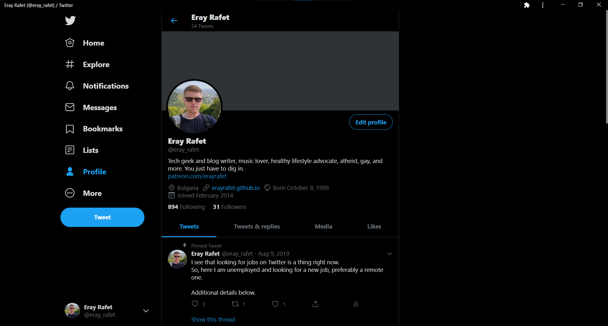
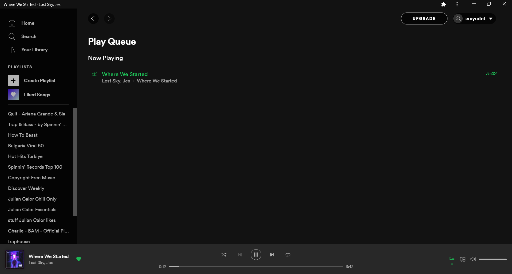
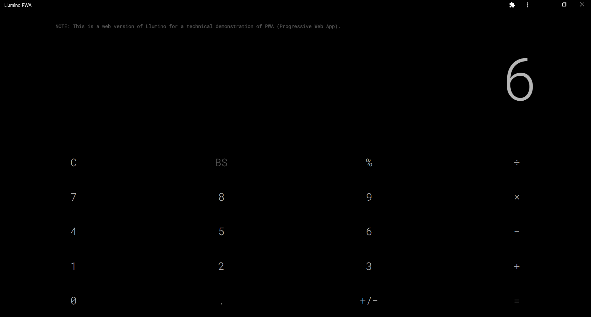
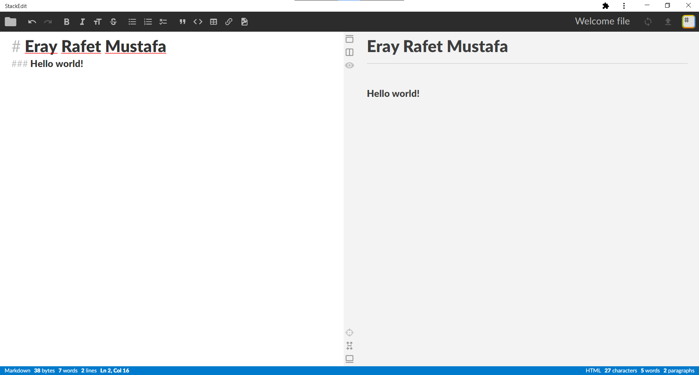
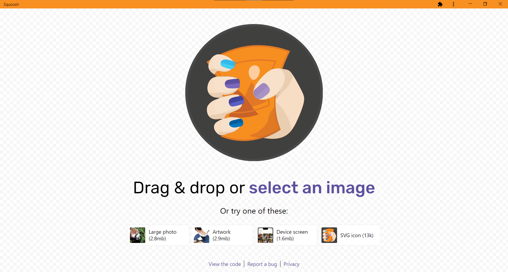

The best PWAs on the internet
Publishing date: June 22, 2020
Progressive Web Apps are part of Google's effort at unifying the web, so to speak. They are simple websites, under the PWA naming umbrella, offering native app-like functions. For example, there is the automatic dark/light mode based on user' preferences set on the OS level, maskable app icons, custom title bar colors, and reliable push notifications due to the use of ServiceWorkers. Upcoming features include app shortcuts (planned to ship with Chrome 84-85) like those on Android and running applications at device startup, thus aiming to bridge the gaps between native and web apps further.
Supported are most browsers based on the Chromium engine, i.e., Chrome, Opera, Vivaldi, Brave, and Microsoft's new Edge too. Let's not forget about Chrome OS either as it is the one platform to benefit the most. Do note that many of the apps listed below run flawlessly on mobile.
Installing PWAs
To install a PWA, look for a plus (➕) icon on the right-hand side of the address bar on desktop devices and on mobile you'll see a pop-up at the bottom suggesting that you add the app of choice to your home screen. It's super easy, isn't it?
Suggestions
- Twitter
Without a doubt, the most function-complete progressive app is Twitter. It comes bundled with everything you can expect - even themes.

- YouTube Music
Google's recent transition from Play Music to YouTube Music positively impacted the development of the YouTube Music web app. They even added an option to upload music files.
It is now decently performing and pretty much a joy to use, aside from a few quirks here and there (queue).
- Spotify
Spotify has also done a great job at bringing the necessity of features required for a perfect music listening user experience, without you needing to download multiple apps on multiple computers.

- Google Photos
Google Photos doesn't come short of the mobile Android and iOS apps 'cause interestingly enough, it ships with basic photo editing abilities.
- Google News
Just recently released, Google News is the perfect candidate to serve all of your news-related entertainment needs. Just give it a go.
- Lumino PWA
Lumino is calculator web app that is boasting a fairly minimal and classy UI, combined with fancy yet beautiful animations.

- Snapdrop
This is a very well thought, sleek-looking cross-platform file sharing web app that support mobile as well as desktop.
- Firefox Send
Firefox Send offers similar functionality to Snapdrop, but with a twist. Instead of transferring files only over a local network, Mozilla sends everything through the internet with full end-to-end encryption for those of us who are privacy conscious. Maximum file size allowed is 2.5GB.
- Web Code Editor
A free online platform for learning web development on the go, with support for HTML5, CSS, and JavaScript.
- StackEdit
StackEdit is an impeccable tool for writing using Markdown, but not only. It stores files locally in your browser so you can continue working whether you are offline or not.

- Squoosh
Developed by Google, Squoosh is a handy web app that can greatly compress all sorts of images (PNGs, JPEGs, etc.) with minimal to no effort. A shout out to ChromeUnboxed for sharing it.

PWA stores
Ultimately, it all boils down to one thing - having easy access. By that, I mean that we need some type of a centralized place to get apps which is heaps more convenient than hunting over the World Wide Web and it's proven to be the best method indeed. With recent changes to the Play Store, Google now includes optional PWA installations, and if you are on a Chromebook, you get those by default (with Twitter, for example).
But there are two other places worth taking a peek at:
Bonus tip
Well, all Chromium-based browsers give you the option of running websites in their own windows. Take as an example YouTube. After last year's queue feature rollout, it is suitable at running in a standalone window, simply resembling a mobile app.
To make that happen, click on the three-dot menu on the top-right for Chrome, navigate to More tools and select Create shortcut... If you are a Microsoft Edge user, hit Apps > Install this site as an app. The same applies for all websites.
My favorite non-web apps (those that do not comply with the PWA standards) I use daily are Telegram React, Discord, Twitch, Reddit, GitHub, Gmail, Google Keep, as well as a few others.
Stay tuned for future updates on this topic and please, do share this article around, and let me know of other topics you'd like to see covered here - Android, Linux, Windows, whatever...